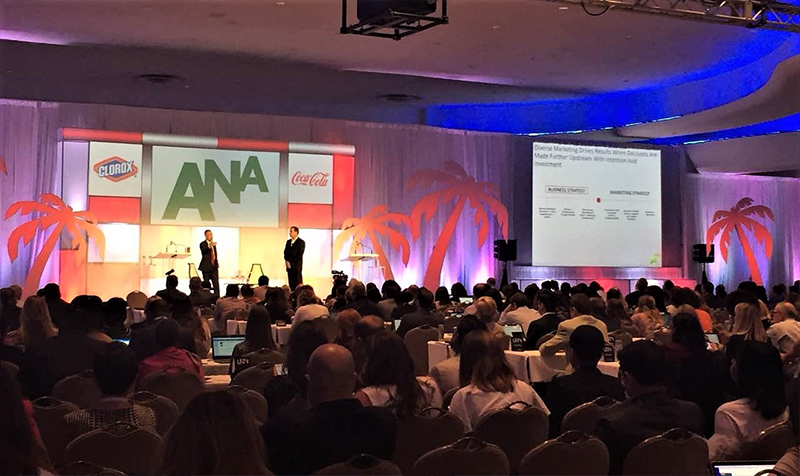
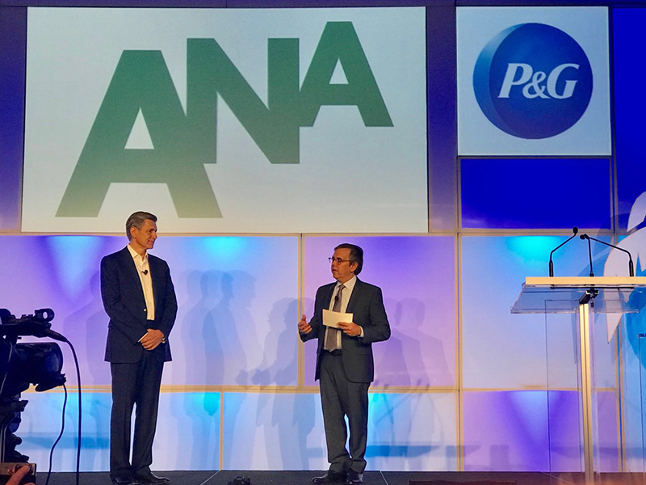
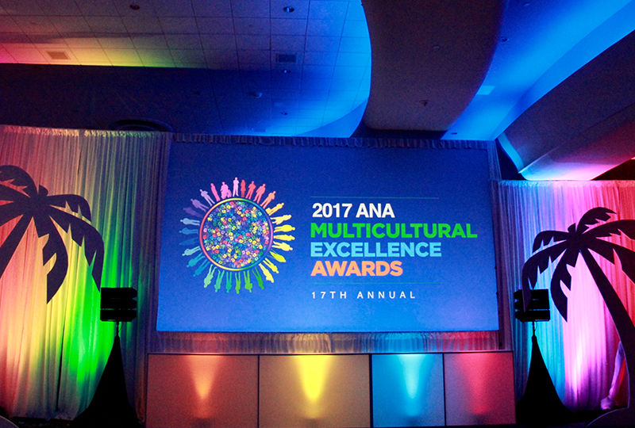

Asian-Americans are Making a Great Impact on the Advertising Industry
"Asian-Americans are the FASTEST-GROWING population segment. Their buying power will hit $1 TRILLION by 2018 and become one of the most important multicultural communities with great fortunes."
These statements were given by Victoria Lei, the Executive Vice President of iTalkBB, during an award presentation at the 2017 ANA's Multicultural Marketing & Diversity Conference in Miami, FL.
Victoria Lei is presenting an award for the Asian-American category
Ms. Lei emphasized that Asian-Americans are making a great impact on the advertising industry. Their buying power is greater than the economies of all but 17 countries worldwide, and their median household income is 39% higher than the national average. "It is imperative for companies to resonate with this unique community and develop successful multicultural strategies," Ms. Lei added.
Indeed, the Asian-American community was one of the most widely discussed topics this year and was emphasized by many of the speakers. Big brands and agencies are increasing their advertising budget to appeal to this rapidly growing category in order to expand their customer base to the Asian-American community and take advantage of their buying power.
Hundreds of participants in the 2017 ANA conference
Mr. Tettamanti, the SVP/Cross-Border Marketing of Mastercard Worldwide, the winner of the “Best in Show”, predicted that multicultural marketing will be the general marketing in the future. Procter & Gamble Chief Brand Officer Marc Pritchard mentioned “we have zero tolerance with our ads being associated with bias, bigotry or hate”.

Left: Marc Pritchard, Procter & Gamble Chief Brand Officer
Right: Gilbert Davila, Host of the ANA multicultural event
The 2017 ANA Multicultural Excellence Awards were granted to raise awareness and increase exposure of the outstanding work being done in the area of multicultural advertising, the most profound theme of this year. Claudine Waite, the Director of ANA and the conference's host, mentioned that "what we saw was an increased intensity on appropriately reaching the multicultural segment, and especially this year, we bring a great focus on the strong growth of the buying power of Asian-Americans”.
Multicultural Excellence Awards
The competition for the Asian category was tremendous this year. Brands like Xoom, State Farm, and the U.S. Marine Corps are creating innovative marketing campaigns and spending great effort to break into this expansive market. This year, the final winner of the Asian-American category was Xoom, "XoomLOL Comedy Series”, Keyframe, Inc.
iTalkBB, as the presenter and sponsor of this signature industry event's Asian-American category, is dedicated to providing better living for Asian communities. iTalkBB's many products and services have always been tailored to meet Asian-Americans' specific needs and lifestyles. With more than 1.2 million users worldwide and over 80% brand awareness in the Asian community, iTalkBB retains its position of the No.1 international telecom provider to overseas Asian communities. Its commitment to this category is truly second to none.
As the gateway to reaching overseas Asian-Americans, iTalkBB has the best understanding of this customer base and delivers the most effective marketing solutions. Their excellent Chinese TV services have been particularly popular among the Asian-American community for providing top live channels, hit movies, and exclusive TV shows. With more than 50% of Asian-Americans watching TV in the Asian language and more than five hours spent each day watching these programs, iTalkBB's TV platform is becoming the best and most effective gateway to accessing Asian communities.
ABOUT THE ANA
The ANA (Association of National Advertisers) makes a difference for individuals, brands, and the industry by driving growth, advancing the interests of marketers, and promoting and protecting the well-being of the marketing community. Founded in 1910, the ANA provides leadership that advances marketing excellence and shapes the future of the industry. The ANA's membership includes more than 1,000 companies with 15,000 brands that collectively spend or support more than $400 billion in marketing and advertising annually. The membership is comprised of more than 750 client-side marketers and 300 associate members, which include leading agencies, law firms, suppliers, consultants, and vendors. Further enriching the ecosystem is the work of the nonprofit ANA Educational Foundation (AEF), which has the mission of enhancing the understanding of advertising and marketing within the academic and marketing communities.
ABOUT ITALKBB
iTalkBB is a company dedicated to creating innovative and authentic mobile communication experiences and TV content for people around the globe. We provide international phone services that break down distance barriers and allows our customers to easily and affordably connect with their communities – no matter where they may be. We understand our customer base and work hard to tailor our products to fulfill their individual needs. With the best understanding of Asian communities, our platforms are becoming the best and most effective gateway to accessing overseas Asian-Americans.